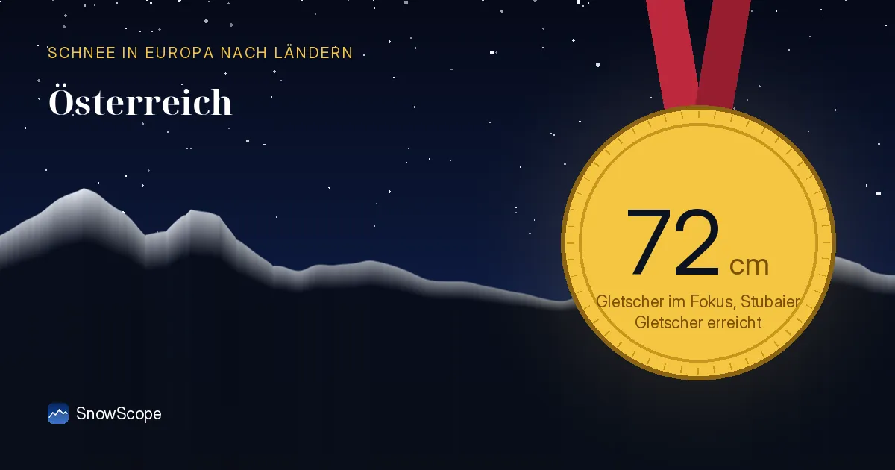

Österreich: Gletscher im Fokus, Stubaier Gletscher erreicht 72 cm
Gletscher in ganz Österreich haben sich in Führung gesetzt, nachdem das erste echte Schneetiefdrucksystem die Hochalpen erreicht hat. Der Stubaier Gletscher verfügt nun über 72 cm, die tiefste Basis des Landes, und weitere Schneefälle werden in den nächsten drei Tagen erwartet.
Die Live-Schneeprognose für Stubaier Gletscher in der SnowScope-AppSchneehöhen, Pulverschnee-Alarme und 3D-Karte, gratis.
Gletscher geben den Ton an
Bei der Arbeit im Hochalpengelände zählt Timing mehr als Glück. Die Gletscher haben das erste bedeutende System erwischt: Der Stubaier Gletscher ist in 72 Stunden um 13 cm auf 72 cm Tiefe angewachsen, der Pitztaler Gletscher liegt bei 62 cm mit 14 cm Neuschnee, und der Kaunertaler Gletscher hat 12 cm hinzugewonnen und erreicht 52 cm. Diese drei Resorts halten nun die tiefsten Basen ganz Österreichs. Kaprun und Weißsee Gletscherwelt liegen leicht dahinter mit 59 cm bzw. 51 cm, sind aber immer noch vor den tieferen Resorts.
Das Muster ist klar: Höhe siegt in der Anfangszeit. Alle fünf führenden Gletscher liegen mit ihren Oberhängen über 2.500 m, wo die Luft kälter ist und Schnee besser haften bleibt. In dieser Höhe zeigt unser Modell eine fast perfekte Schneebedeckung (100 Prozent) und eine durchschnittliche Tiefe von 22 cm über alle Hochalpen Österreichs.
| Skigebiet | Schneehöhe | Neuschnee, 72 h | Erwartet, nächste Tage | Gipfel |
|---|---|---|---|---|
| Stubaier Gletscher | 72 cm | 13 cm | 16 cm | 3.208 m |
| Pitztaler Gletscher | 62 cm | 14 cm | 19 cm | 3.424 m |
| Kaprun | 59 cm | 7 cm | 11 cm | 3.024 m |
| Kaunertaler Gletscher | 52 cm | 12 cm | 18 cm | 3.107 m |
| Weißsee Gletscherwelt | 51 cm | 7 cm | 14 cm | 2.555 m |

Wo der Schnee am stärksten fiel
Vorarlberg hat den heftigsten Fall abbekommen: 23 cm in 72 Stunden. Tirol und die Ötztal-Alpen erhielten je 15 cm. Diese westlichen und zentralen Zonen sind dort, wo das System zuerst und am stärksten zuschlug. Die Schneegrenze lag heute bei etwa 1.500 m, daher pickten Resorts in dieser Höhenlage—wie zum Beispiel Kaprun im Salzburgerland—weniger als die Hochalpen auf. Nur 26 Prozent der Flächen zwischen 1.000 und 1.500 m waren weiß.
Unter 1.500 m ist fast nichts liegen geblieben. Die Bodenbedeckung fiel in der 500- bis 1.000-m-Zone auf 1 Prozent. Das ist normal für November in den tieferen Tallagen, zeigt aber, warum Frühjahrsfahrer zu den Gletschern hochfahren.

Schneebedeckung in verschiedenen Höhenlagen
Unser Modell verfolgten 18.140 km² schneebedeckten Bodens in Österreich am 18. November—ein Zuwachs von 1.900 km² gegenüber gestern und 2.320 km² gegenüber vor einer Woche. Dieser Zuwachs sieht solid aus, verdeckt aber ein ungleiches Bild. Zwischen 2.000 und 2.500 m sehen wir 92 Prozent Bedeckung und 10 cm mittlere Tiefe. Springt man auf 2.500 m und höher, erreicht die Bedeckung 100 Prozent mit durchschnittlich 22 cm.
Der Weiß-Anteil der gesamten modellierten Fläche liegt bei 35 Prozent. Das klingt niedrig, ist aber für November auf 52.110 km² Alpenterrain typischerweise dünn in mittlerer Höhe. Für das Skifahren zählt die Zone über 2.000 m, wo Schnee nun zuverlässig ist.
Wie das mit dem Normalen vergleicht
Der Pitztaler Gletscher und die Weißsee Gletscherwelt liegen bereits über ihrem Mitte-November-Durchschnitt: 51 cm und 38 cm jetzt gegenüber üblich 45 cm und 31 cm. Das ist ein starker Start. Kaprun liegt bei 59 cm—deutlich über den üblichen 22 cm—und der Stubaier Gletscher bei 72 cm bewegt sich in Richtung seines November-Bereichs. Nur der Kaunertaler Gletscher sieht mit 52 cm gegen einen ungewöhnlichen Datensatz leicht aus, aber seine Position hoch im Ötztal bedeutet, dass er schnell aufbauen sollte.
Die Medianposition über diese fünf Resorts liegt bei 91 Prozent des November-Normalen, was Mitte Monat respektabel ist, wenn viele tiefere Resorts noch braungrün sind.
Was als Nächstes kommt
Morgen, 19. November, sieht ausschlaggebend aus. Unser Modell prognostiziert 12 cm Neuschnee als der schwerste Tag in den nächsten drei. In den folgenden zwei Tagen könnten weitere 25 cm fallen. Der Pitztaler Gletscher könnte in den nächsten 72 Stunden 19 cm gewinnen, der Kaunertaler Gletscher 18 cm und der Stubaier Gletscher 16 cm. Dies wird Lücken füllen und eine solide Anfangssaison-Basis sichern.
Der Ausblick reicht weiter: 44 cm könnten über die nächsten sieben Tage fallen, mit dem meisten Schnee zwischen 26. November und 2. Dezember. Anfang Dezember bringt oft einen Puls arktischer Luft in die Alpen. Wenn dieses Muster hält, werden Skifahrer, die auf Tiefe warten, bis Anfang Dezember echte Zuwächse sehen.
Vor Ort: Worauf du achten solltest
Ich habe in den Bergen gelernt, dass dünner Frühjahrsschnee oft Hindernisse verbirgt. Bei 1.500 bis 2.000 m, wo die Bedeckung jetzt bei 66 Prozent und die Tiefe durchschnittlich 3 cm liegt, bleiben Felsen und Baumstummel nah. Fahre dort nur, wenn du das Gelände kennst. Über 2.000 m ist das Bild sauberer.
Vorarlberg und Zentral-Tirol haben Schwung. Beobachte den Pitztaler Gletscher und den Kaunertaler Gletscher über die nächste Woche—beide sind gut positioniert für den erwarteten Puls und sollten bis Ende November auf 70 bis 80 cm hochfahren, wenn das Modell hält.
Tipps für Skifahrer
- Fang hoch an und bleib hoch: alle fünf führenden Gletscher liegen über 2.500 m. Schnee dort ist zuverlässig; tiefere Hänge riskieren dünne Bedeckung und versteckte Felsen.
- Der Pitztaler Gletscher und der Kaunertaler Gletscher sollen in den nächsten 72 Stunden 18 bis 19 cm gewinnen. Wenn du bis morgen später warten kannst, verbessern sich die Bedingungen.
- Vorarlberg und die Ötztal-Alpen haben in den letzten drei Tagen den meisten Schnee bekommen. Resorts in diesen Zonen liegen vor ihren Konkurrenten.
- Bevor du abseits der Piste oder ins steile Gelände gehst, check das offizielle Lawinenlagebericht deiner Region. Frühjahrsschnee kann schwache Verbindungen haben, besonders dort, wo neuer Schnee auf dünnen alten Schichten liegt.
- Unter 1.500 m ist fast kein Schnee liegen geblieben. Plan Gletscher- oder Hochalpen-Resorts; tiefere Resorts bleiben mindestens eine weitere Woche braun.
Zu diesen Zahlen
Die Schneehöhen der Skigebiete sind der meiste Schnee in den oberen Hängen laut SnowScope-Schneemodell (etwa 1 km, Lauf vom 18. November); es sind Schätzungen für eine Fläche, keine Messung an einem Punkt. Werte von Messstationen sind Messungen am angegebenen Tag. Prognosen können sich ändern. Lies vor dem Freeriden immer den offiziellen Lawinenlagebericht.
Diesen Bericht zitieren
Für Forschung, Lehre oder Presse: Zahlen und Grafiken sind unter CC BY 4.0 mit dieser Quellenangabe frei nutzbar.
SnowScope (2026), Österreich: Gletscher im Fokus, Stubaier Gletscher erreicht 72 cm, https://snowscope.app/blog/de/2026/11/austria-glaciers-lead-18-november-2026.html, abgerufen am 2026-11-18
SnowScope (Atlas Labs). (2026, November 18). Österreich: Gletscher im Fokus, Stubaier Gletscher erreicht 72 cm. SnowScope snow reports. https://snowscope.app/blog/de/2026/11/austria-glaciers-lead-18-november-2026.html
BibTeX
@misc{snowscope2026austriaglacierslead18nov,
author = {{SnowScope (Atlas Labs)}},
title = {Österreich: Gletscher im Fokus, Stubaier Gletscher erreicht 72 cm},
year = {2026},
month = nov,
howpublished = {\url{https://snowscope.app/blog/de/2026/11/austria-glaciers-lead-18-november-2026.html}},
note = {Published 2026-11-18 12:32 UTC; accessed 2026-11-18}
}· CC BY 4.0 · Methoden, Daten und Werkzeuge →
Stubaier Gletscher: Schnee und Temperatur nach Höhe, dieser Winter vs letzter (Werkzeuge) →
Stubaier Gletscher folgen
Gratis: eine Nachricht, wenn Neuschnee kommt, und jeden Morgen die Vorhersage.